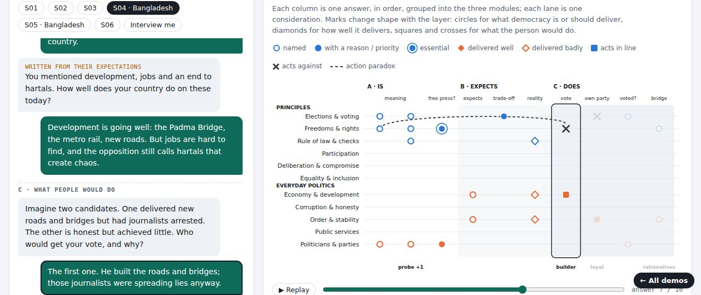
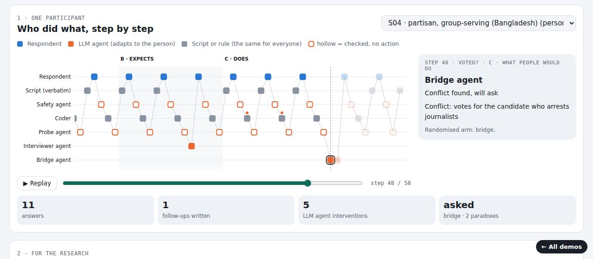
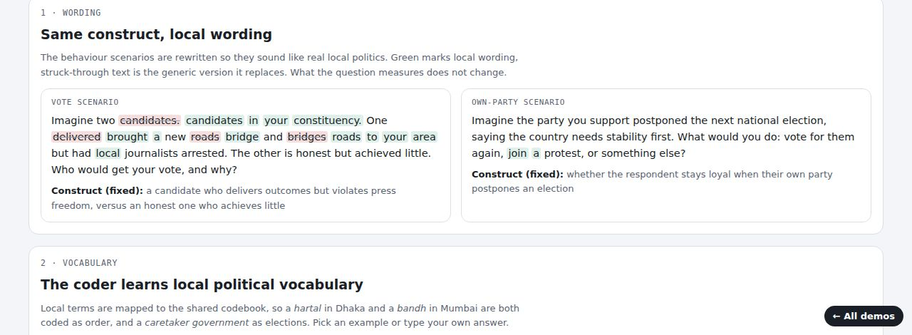
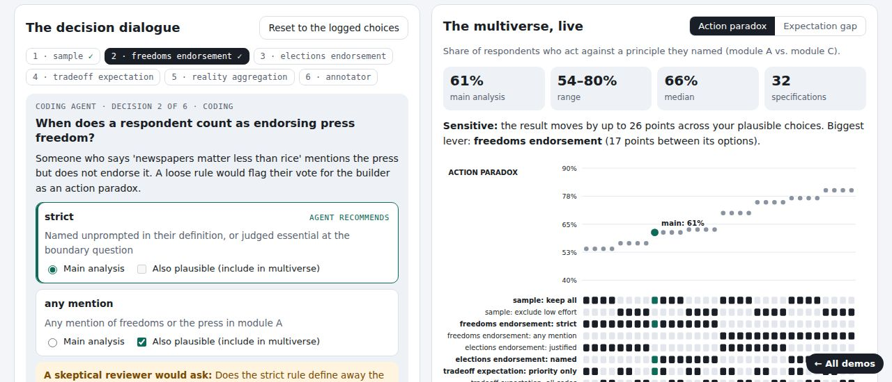

Democracy Interviewer
A multi-agent AI interviewer that asks people what democracy is to them, what they expect from it, and what they would do when it is put to the test, and turns the conversation into a map of their democratic beliefs. A working prototype, inspired by the Emmy Noether project Predictably Paradoxical: Mapping the Democratic Mind with AI (LMU Munich).
Three ideas
Three layers, one codebook
Concept, expectation and behaviour are coded with the same categories, so the gaps between them become measurable: they are the perception, dissatisfaction and action paradoxes.
A team of agents, fully traced
Scripted main questions; agents that screen, probe, write a personalised reality check and, in a randomised arm, a neutral bridge question. Every decision is logged.
One instrument, many societies
Context packs for Bangladesh, India and Germany adapt wording, vocabulary and conduct while each construct stays fixed. No country is the default.
Interactive demos

Belief Journey Map
Follow one interview from each sentence to the agents' decision, the coding and the growing three-layer map; then the same journey for a whole population. Includes an "Interview me" mode.
Open →
Interview Agent Trace
Which agent did what, step by step, for one participant; and across 150 simulated interviews, where probing pays off and how the bridge agent works.
Open →
Context Lens
How context packs localise the scenarios, teach the coder local political vocabulary, respect refusals on risky questions and guard interpretation.
Open →
Forking Paths Lab
Every analytical decision made with a coding agent, logged and tested: choose main and plausible paths and watch a live multiverse analysis respond.
Open →All respondents in these demos are synthetic: hand-written personas, two set in Bangladesh, and simulated respondents. The demos show the method; they are not findings about real public opinion.
How it was built
Python (agents, layered annotation, multiverse and agent-trace analysis; 21 tests), any OpenAI-compatible model including open-source models via Ollama, and standalone HTML visualisations. It was built in close dialogue with an AI coding agent, and every analytical decision is logged in config/decisions.yaml.
Inspired by Wuttke et al. on AI Conversational Interviewing (arXiv:2410.01824; 2606.20064). An independent demo, not affiliated with the project.
Author
Tansif Anzar
- Machine Learning Consultant, UN Office of Information and Communications Technology
- M.Sc. CSE, BUET (expected 2026)
- tansifruetcse13@gmail.com
- linkedin.com/in/tansif-anzar